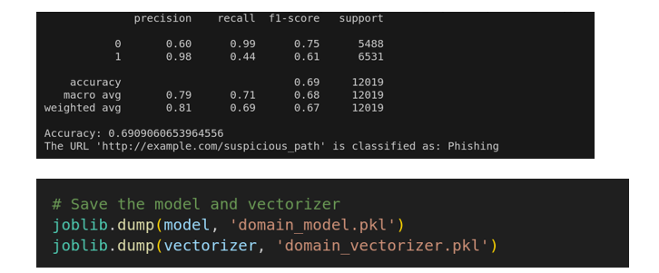

This capstone project demonstrates how machine learning can be leveraged to identify phishing emails by analyzing email structure, content, sender behavior, and attachments.
Phishing is the most common method of email-based attacks. Studies show that 43% of phishing emails contain malicious links, making automated link detection a key defense mechanism.
The solution follows a clear pipeline: extract email data → engineer features → classify using ML models → predict phishing likelihood.
Each email is dissected into five core components:
Training data was compiled from multiple labeled sources and processed into vectors using natural language features and URL patterns.
Our system extracts email metadata including sender domain, URL presence, and combines body + subject for better context analysis.
Features are vectorized using TfidfVectorizer. This includes merged body + subject text, word counts, and domain patterns.
We compared different classifiers on the same dataset:
Random Forest builds multiple decision trees and uses majority voting to decide class. This method increases accuracy and reduces overfitting by leveraging different perspectives of the data.
def scan_file(file_path): # Submit file to VirusTotal url = 'https://www.virustotal.com/vtapi/v2/file/scan' with open(file_path, 'rb') as f: files = {'file': (os.path.basename(file_path), f)} params = {'apikey': 'API_KEY'} response = requests.post(url, files=files, params=params) return response.json()9. Model Training

.pkl for reuse